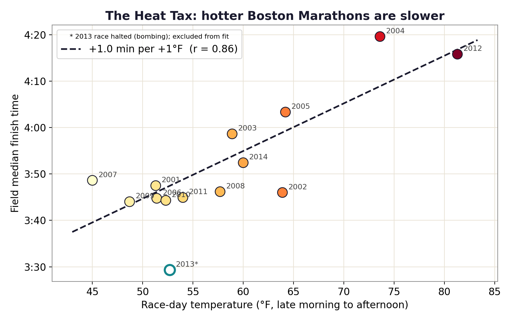
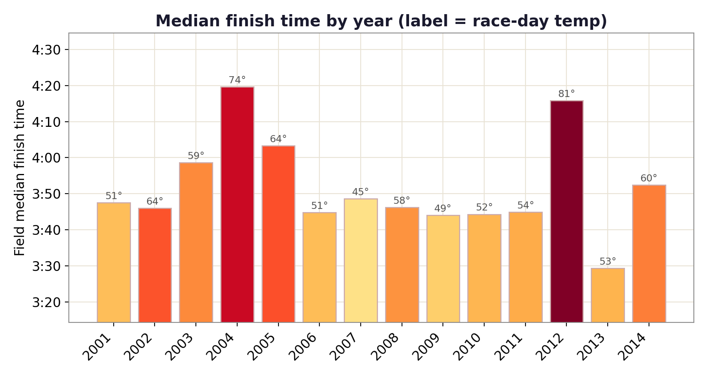

Data story · 14 years of Boston Marathons
Every runner knows heat ruins a race. I wanted the price tag, so I paired fourteen Boston Marathons with their race-day weather.
We all know a hot day makes a marathon harder. But "harder" isn't a number. By how many minutes does a degree of temperature actually slow a whole field of runners? Boston is a perfect natural experiment: the same iconic course, run every April, but under wildly different weather, from a chilly 45°F to a brutal 81°F.
I took the official results of every Boston Marathon from 2001 to 2014 and computed each year's median finish time. The time of the runner smack in the middle of the field. Then I pulled the race-day temperature for each year from a historical weather archive and put the two side by side.
The relationship is strong and hard to miss: the warmer the race, the slower the field, with a correlation of r = 0.86. The fit works out to roughly one extra minute on the median finish for every degree Fahrenheit. The two hottest years on record here, 2012 (81°F) and 2004 (74°F), sit far above everyone else.

Stretch that across the realistic range and the toll is huge: moving from an ideal 50°F to a sweltering 80°F adds about 31 minutes to the median runner's day. In the famously hot 2012 race, the median finisher came in around 4:16, versus roughly 3:44 in cool, fast years.

If you're chasing a time goal, a Boston qualifier, a personal best, the forecast may matter as much as your training block. A warm race isn't a small handicap; for the average runner it can be the difference between hitting your goal and missing it by half an hour. Plan your goal pace around the weather, not just the calendar.
fetch_data.py + analyze.py in the repo.